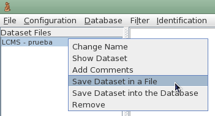

Selecting the data set and pressing the right button of the mouse a file menu appears in the screen:

When "Save Dataset in a File" is selected a new dialog appears where can be defined the format and the fields of the file.
The format can be xls (Excel) or csv (Comma separated).